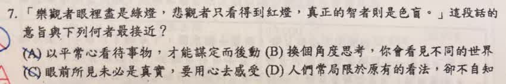

分享原卷｜第7題
完整原題
「樂觀者眼裡盡是綠燈，悲觀者只看得到紅燈，真正的智者則是色盲。」這段話的意旨與下列何者最接近？
(A) 以平常心看待事物，才能謀定而後動
(B) 換個角度思考，你會看見不同的世界
(C) 眼前所見未必是真實，要用心去感受
(D) 人們常局限於原有的看法，卻不自知
先想一想，再查看答案、解說與原圖
原卷作答：D；紅筆訂正A，與原AI選D不同
正確答案：A，以平常心看待事物，才能謀定而後動。
逐項解析
| 選項與原句 | 判讀 | 句意與判斷理由 |
|---|---|---|
| (A) 以平常心看待事物，才能謀定而後動 | 應選 | 平常心最直接對應智者不偏向樂觀、悲觀，再審慎判斷採取行動，選A。 |
| (B) 換個角度思考，你會看見不同的世界 | 不選 | 重點在轉換角度，與不偏向紅綠任一立場的平常心不同。 |
| (C) 眼前所見未必是真實，要用心去感受 | 不選 | 原句非討論感官所見真假，也沒有強調用心感受。 |
| (D) 人們常局限於原有的看法，卻不自知 | 不選 | 只著重原有看法的局限，沒有A直接掌握末句智者應有的平常心。 |
詳細說明與解題步驟
【先理解紅燈、綠燈與色盲的比喻】
樂觀者只看見綠燈，表示一味看好事情；悲觀者只看見紅燈，表示總覺得有阻礙。「智者是色盲」不是指真的視覺障礙，而是比喻不偏向盲目樂觀或悲觀，能以平常心看待事物。
【為什麼選A】
全句最後落在智者的態度。A的「以平常心看待事物」最直接對應不被紅、綠兩種預設立場牽著走，進而審慎判斷，再採取行動，因此選A。
【其他選項】
B著重換個角度，沒有A直接點出不偏樂觀或悲觀的平常心。
C著重眼前所見與真實、內心感受的差別，不是本句的重點。
D雖提到原有看法的局限，能對應樂觀者與悲觀者的部分描述，但沒有A直接掌握最後智者應有的態度。
【原AI解答訂正】
原AI選D；使用者已確認本題正確答案為A。題文、四選項與原卷訂正紀錄照留，以全句特別是末句的重點判讀。
核對註記：原題與四選項已核對；使用者確認答案A，已結案。
原圖（僅本題）
